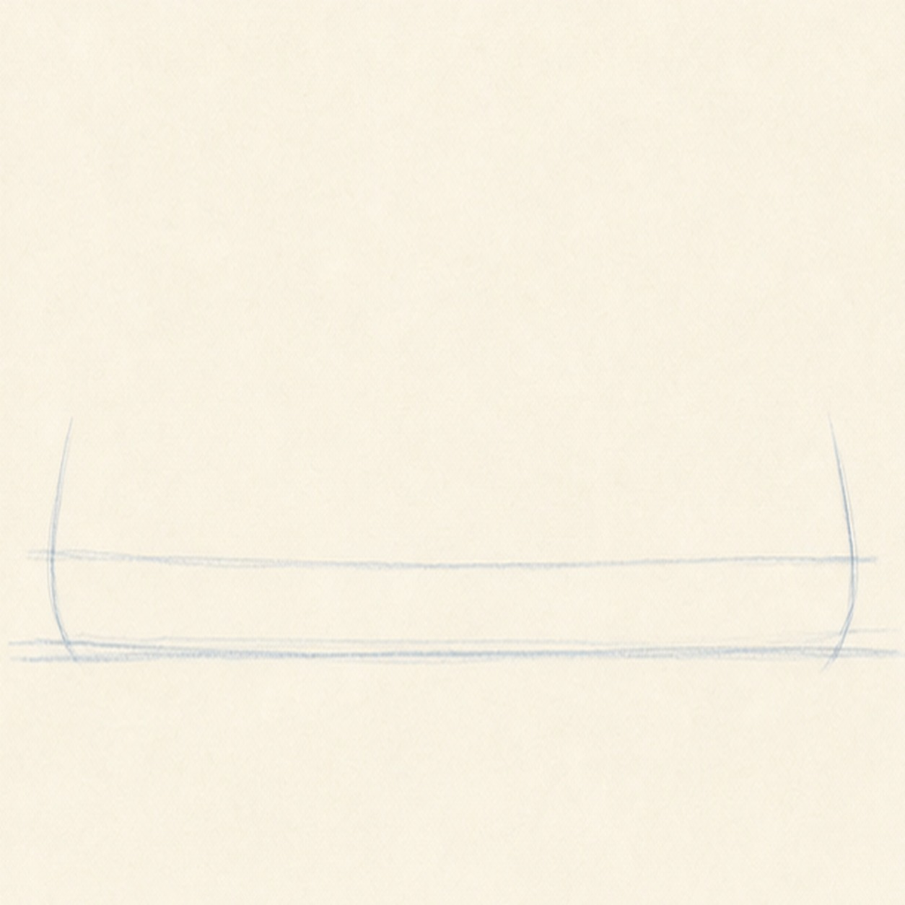
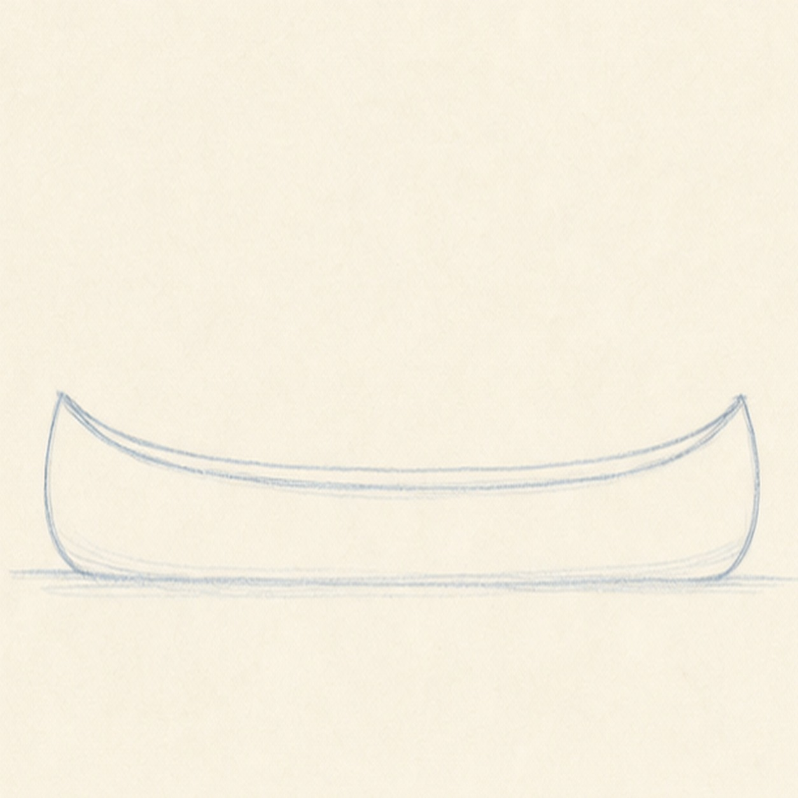
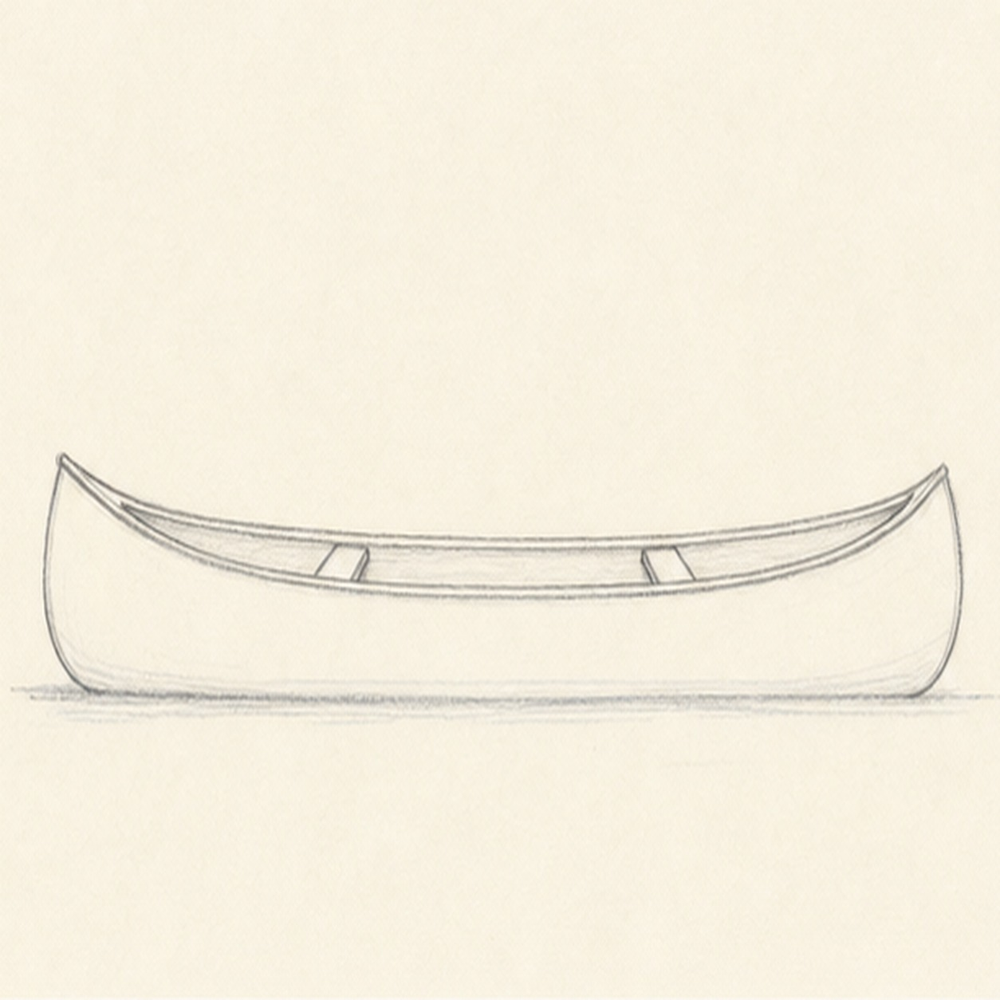
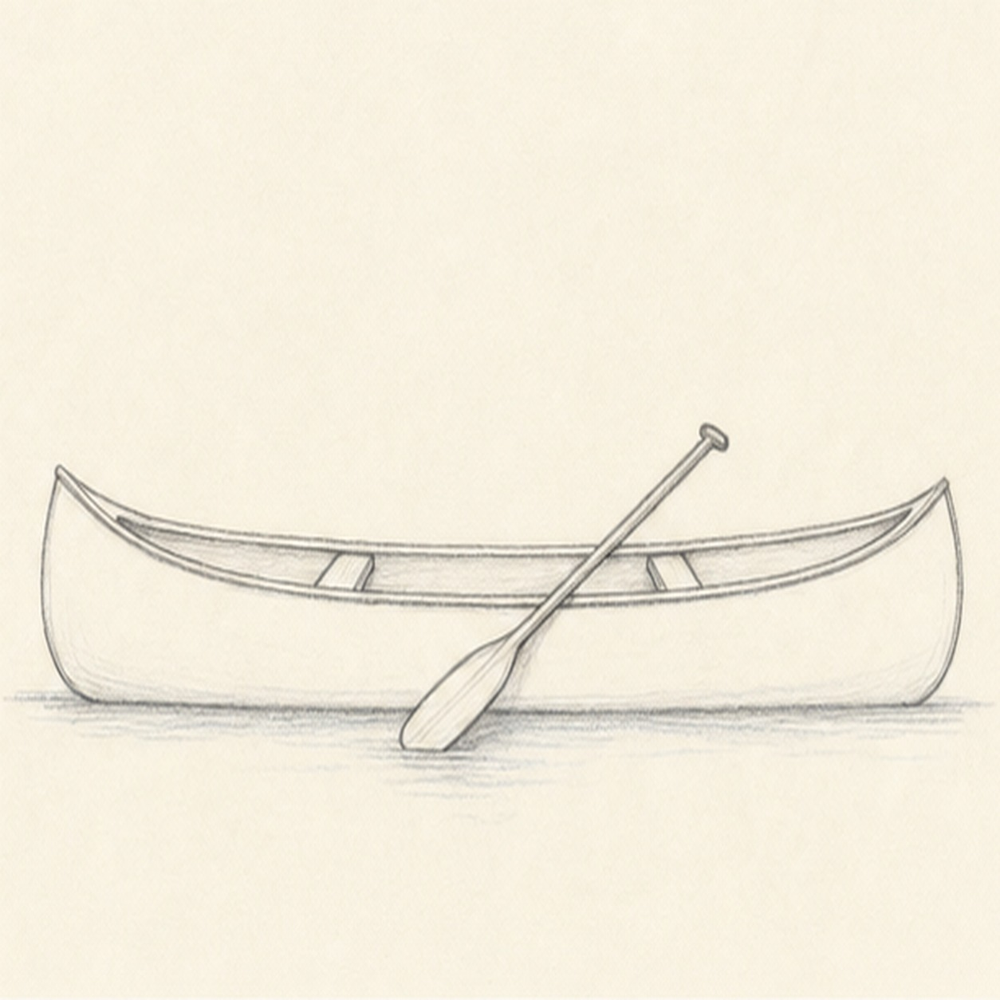
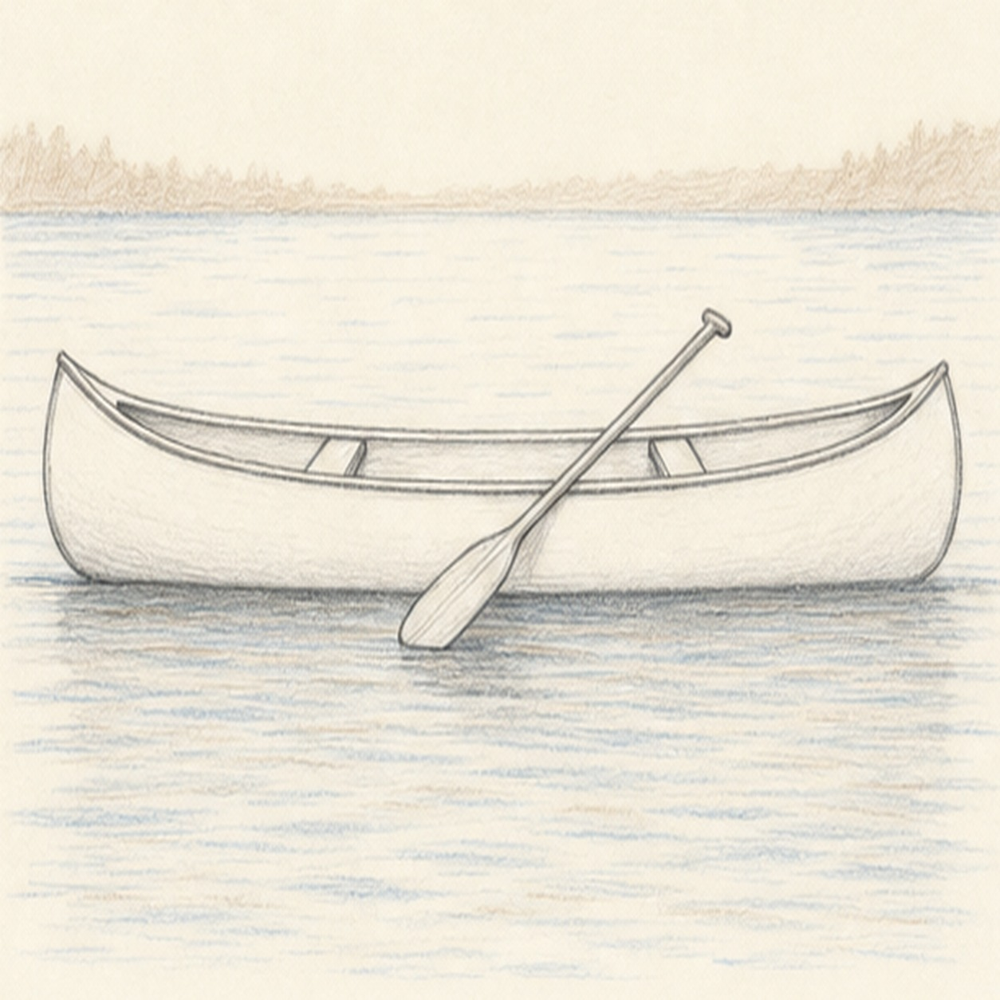

From the archive
Let's draw a canoe
Work lightly through the construction, then darken only the lines that help the finished sketch.
-
01

Place the canoe guide
Draw a long shallow curve for the top of the canoe, then add tiny lifted end guides and a light water baseline underneath.
Sketch tip: Keep the guide low and wide. A canoe should feel stretched out before you add details.
-
02

Shape the hull
Connect the raised bow and stern with a curved lower edge so the canoe becomes one narrow, open hull.
Sketch tip: Let both ends lift at about the same height. Matching those tips keeps the boat from looking twisted.
-
03

Add rim and seats
Draw a second line inside the top edge for the rim, then place two short cross seats across the open canoe.
Sketch tip: Angle the seats slightly with the rim. They should sit inside the boat, not float on top of it.
-
04

Rest the paddle
Lay a slim paddle diagonally across the canoe with a narrow handle and one simple oval blade near the water.
Sketch tip: Draw the handle first, then widen the blade. A heavy paddle can overpower the quiet canoe.
-
05

Add lake marks
Sketch loose horizontal ripples around the hull, a pale shore line in the distance, and a soft shadow under the canoe.
Sketch tip: Keep the water marks flatter than the boat curves. Horizontal strokes make the lake feel calm.
-
06
Finish the lake sketch
Darken the hull, rim, seats, paddle, ripples, shore, shadow, and restrained blue-brown pencil touches without adding people or extra boats.
Sketch tip: Stop while the shoreline is still pale. The canoe should stay the main read at thumbnail size.